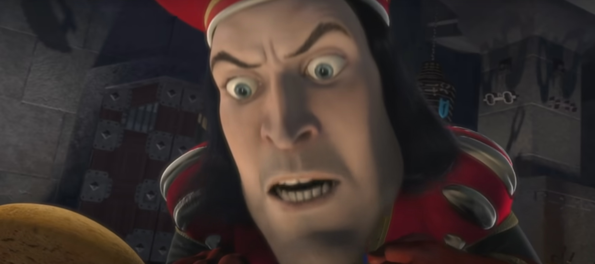
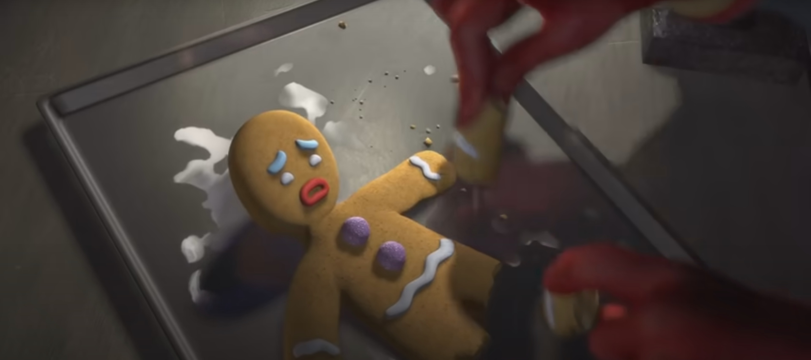
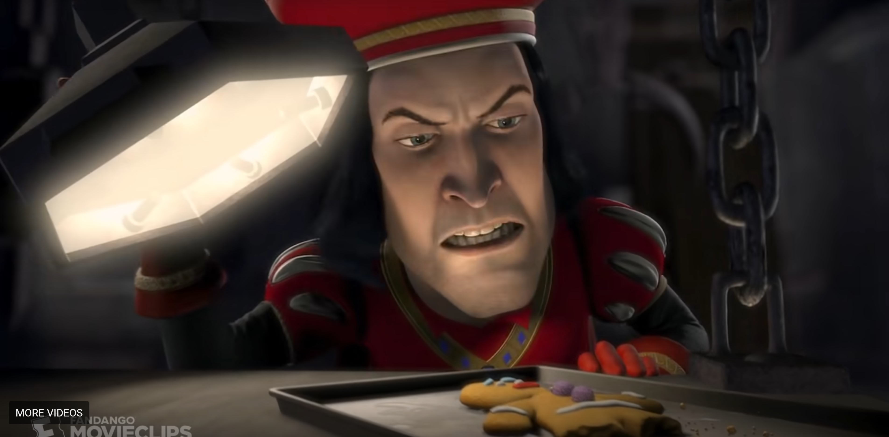

3D Art & Aesthetics Week 1 Film Emotional Reaction
For the scene I choose this week, I picked the interogation scene from the original Shrek where King Farquad tries to get the gingerbread man to speak. I was thinking of some of my favorite 3D movies and I was reminded of this old one because it came up on TV when I was at a hotel during my travels this summer. This movie was always pretty fun to me since it never took itself too seriously with its rediculous jokes, potty humour, and pop references and songs. Looking for clips on Youtube, this one came up and it had some obvious lighting decisions done based on the tone they were going for.
In this scene, you can see that it's entirely void of natural outdoor light, meaning that they could be in an underground dungeon or somewhere hidden in the castle. The shadows are very high contrast with lights placed on the ground pointed upward giving a menacing look like the kind you get when telling stories around a campfire with a flashlight. There's also at least the one overhead light that is pulled down, for a classic interogation scene kind of setting. Although the setup is overly dramatic and isn't trying to be subtle at all with it's intentions, it fits the parody and comedic tone perfectly. Looking back now, I did realize that they shouldn't really have the technology for electricity or light bulbs in this setting!   
home
while (!deck.isInOrder()) {
print 'Iteration ' + i;
deck.shuffle();
i++;
}
print 'It took ' + i + ' iterations to sort the deck.';